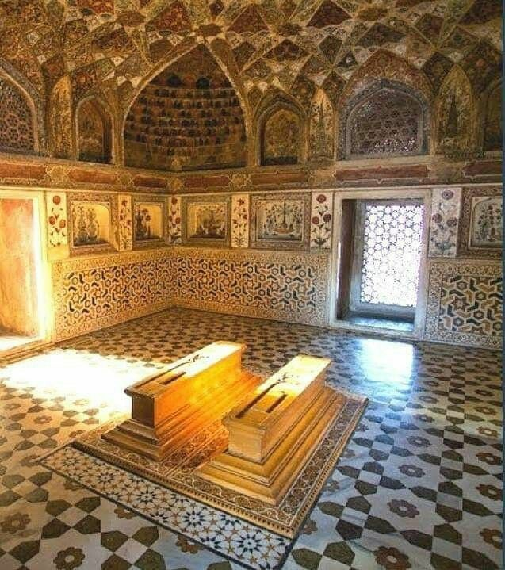
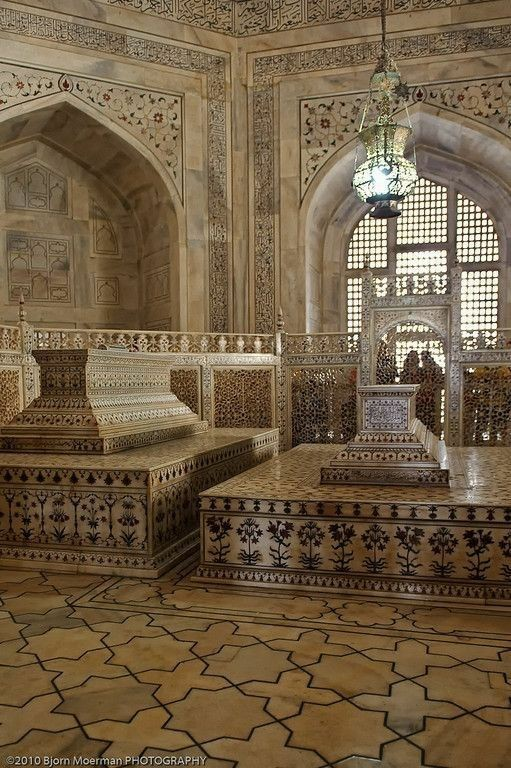

- The Taj Mahal in Agra, India, is a white marble mausoleum built by Emperor Shah Jahan for his wife Mumtaz Mahal.
- Finished in 1653, it symbolizes eternal love and is an architectural masterpiece.
- It features a large central dome, four minarets, and intricate inlay work with semi-precious stones.
- The site includes beautiful gardens, fountains, and reflecting pools, enhancing its beauty.
- As a UNESCO World Heritage Site, it is a top example of Mughal architecture and attracts millions of visitors annually.
Why it's included in Seven Wonders?
- Architectural Marvel: Exemplifies Mughal architecture with influences from Islamic, Persian, Ottoman Turkish, and Indian styles.
- Symbol of Love: Built by Shah Jahan in memory of his wife Mumtaz Mahal, symbolizing eternal love.
- Intricate Craftsmanship: Features exquisite marble work and inlay with semi-precious stones, showcasing high craftsmanship.
- Enduring Beauty: The white marble façade changes color with light, enhancing its timeless allure.